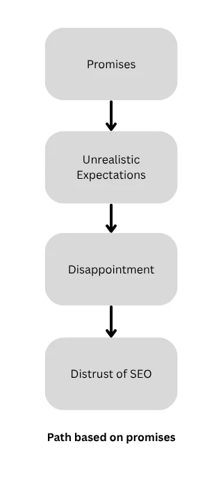
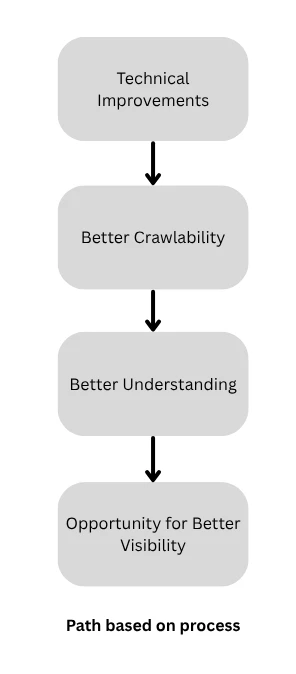

Why SEO Has a Trust Problem
(And How Good SEO Earns It Back) By Fred Fraser
“We'll get you to rank number one on Google!” “First page in 30 days!” “$5,000 a month!” “We'll get you 10,000 visitors!”
Imagine you get a 50-page automated PDF audit just jammed with generic advice. Meanwhile, your rankings are getting lower, conversions are getting lower, your business website is increasingly out of the game.
The Old Model
The traditional SEO model involved high-volume sales reps getting you locked into 12-month contracts, with much of that work outsourced. That same high-volume rep promised “guaranteed #1 rankings” while tying you down with a 12-month contract. Early SEO was built on quick-fix tactics such as keyword stuffing and backlinks to nowhere. “Page 1 in 30 days” and taking expensive monthly retainers was commonplace, while the customer received meaningless reports as rankings plummeted.
Nobody controls Google, so these promises are false. Those good at SEO know that they can improve the odds, remove technical barriers, and create better content. Business owners started to understand this better. Clients were feeling like they were paying for some sort of magic and not tangible work.
The tricks that worked in 2008 now violate Google's spam policies. These tricks resulted in things such as short-term wins followed by long-term penalties, business owners who felt burned, and an overall perception that SEO is just manipulative. Along with mysterious, vague promises came the vague monthly reports, a value that was not really clear, and no real tie-in to revenue. Guaranteeing number one rankings is impossible, though agencies consistently did it. Hence the “snake oil” association. People claimed to be SEO experts after watching a few videos on YouTube, leading to inconsistency in quality, conflicting advice and businesses being hurt by amateurs.
The Truth About SEO
The hard truth about SEO is that it takes time. Technical SEO can produce quick wins, whereas authority building cannot typically provide the same result. This can take three, six, or even twelve months. The expectation from a business owner cannot be to expect Google Ads speed from an SEO campaign. When this didn't happen they simply concluded that SEO just does not work.
Keep in mind that Google continues to change. Years ago, SEO was easier. Now there are hundreds of algorithm updates. What worked one year stopped working the next. Agencies continued selling outdated tactics because they always worked in the past. When rankings disappeared due to poor backlinks, keyword stuffing, or spam blogs once Google caught on, SEO got the blame rather than the “magic”, or the shortcuts.
An agency claims that “we use AI”. Asking ChatGPT to simply generate hundreds of pages is not a strategy. Google increasingly is rewarding web designers and owners for writing original content for blogs and insight articles, rather than having AI do the heavy lifting.
Trust Is Earned
SEO done right is how trust will get earned back. Trust is something that should be earned.

There is an ongoing “is SEO dead” argument that is out there in the search world. Truth is, SEO still matters, perhaps more than ever today than five years ago. Google's AI systems need to understand site architecture, internal linking, structured data, crawlability, page quality, authority. In the age of AI search, technical SEO is important, not gone. The following case study demonstrates how I analyze a real website to test agentic browsing.
What To Look For In An SEO Agency
What should businesses be looking for in an SEO agency? There are lots of good ones out there. Look for statements such as “we improve the technical foundation that search engines rely on” rather than “we improve rankings”. They point out and identify things like missing schema, duplicate titles, oversized images, heading structure. A client can see these, and they can be fixed. SEO should be treated as preventative maintenance. For example, you service your car because you want to keep it running in optimal condition, not service it because something went wrong. Technical SEO is very similar. Instead of promising rankings, look for promises of technical reliability, site performance, and conversion pathways.

Rather than agencies that hide behind complexity, look for ones that are transparent or have an engineering approach. Instead of “we will get you to number one Google”, look for “we fix site performance and architecture to unlock organic revenue”. Site speed, rendering frameworks and clean code drive indexation, not “growth hacks”. Instead of a focus on “vanity metrics” such as impressions, keyword count, domain authority, look for words like “leads” or “revenue”. Look for statements like “we can't guarantee ratings, however we can guarantee improvements in crawlability speed, and content quality”.
In Conclusion
Early SEO relied on gaming search engines with keyword stuffing and low-quality backlinks. Google's AI and machine learning models have evolved, and these shortcuts started to trigger massive algorithmic penalties. SEO is not a set of “tricks” anymore to fool an algorithm. Modern search engines evaluate rendering speed, page performance, structured data, site crawlability, and user experience signals. A good, technical SEO agency will treat your website like a system, not a guessing game.
Good SEO isn't about guarantees. It's about identifying and fixing the technical issues that prevent search engines from properly understanding your website. Learn more about my technical SEO services.
Not sure where you stand with SEO, or AEO, or GEO? Business websites need strong SEO foundations, structured content and AI-friendly formatting. If you want to know how your site performs for modern search, contact me for a free, no-obligation home page review.
Author's note: This article was developed using a combination of my own experience, industry research, and discussions with AI assistants as brainstorming partners. All opinions and conclusions are my own.